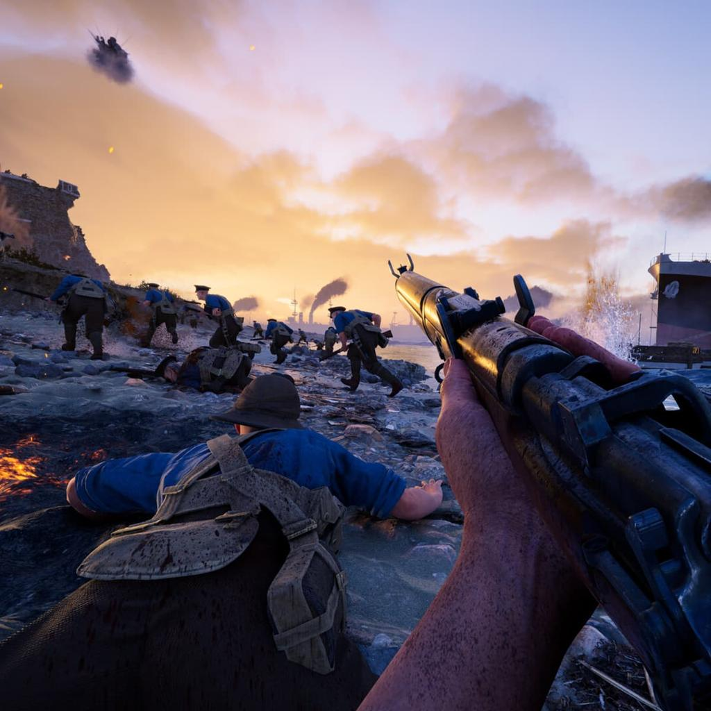

Gallipoli prepara su lanzamiento para PC, PS5 y Xbox
📅 19 de agosto de 2026 · Por TEOS Gaming

>Gallipoli, el nuevo shooter de la serie WW1 Game Series, se prepara para llegar a los jugadores el 20 de agosto de 2026.
El título desarrollado y publicado por BlackMill Games llevará a los jugadores hasta diferentes escenarios de los frentes otomanos durante la Primera Guerra Mundial.
Una nueva experiencia de la Primera Guerra Mundial
Gallipoli continúa la propuesta de la serie WW1 Game Series, conocida por títulos como Verdun, Tannenberg e Isonzo.
En esta ocasión, el juego se centra en los frentes otomanos y permitirá participar en combates ambientados en lugares como la península de Gallípoli y Mesopotamia.
Combates multijugador
Uno de los principales elementos de Gallipoli será su componente multijugador. El juego ofrecerá combates por equipos y partidas con hasta 50 jugadores.
Los jugadores podrán elegir entre 10 clases históricas, cada una con diferentes funciones dentro del campo de batalla.
Más de 50 armas y equipamiento histórico
Gallipoli apuesta por representar el armamento de la época con más de 50 armas y piezas de equipamiento inspiradas en los ejércitos británico y otomano.
El juego también busca ofrecer un sistema de combate más realista, con armas que requieren práctica para dominar su manejo y recarga.
Diferentes escenarios de combate
Los enfrentamientos no estarán limitados a un único tipo de escenario. Gallipoli llevará a los jugadores por playas, zonas costeras, desiertos y áreas urbanas.
Entre los escenarios mencionados se encuentran las playas de Gallípoli, Anzac Cove, Cape Helles y diferentes zonas de Mesopotamia.
Crossplay entre PC y consolas
El juego contará con partidas entre diferentes plataformas mediante crossplay, permitiendo que jugadores de PC y consolas puedan formar parte de los mismos enfrentamientos.
¿Cuándo sale Gallipoli?
Gallipoli llegará el 20 de agosto de 2026. La fecha está confirmada en las páginas oficiales de PlayStation, Xbox y Steam.
El lanzamiento estará disponible para PC, PlayStation 5 y Xbox Series X|S.
Conclusión
Gallipoli llega como una nueva propuesta para los aficionados a los shooters ambientados en conflictos históricos.
Su combinación de combates multijugador, diferentes clases, armamento histórico y escenarios inspirados en la Primera Guerra Mundial lo convierte en uno de los lanzamientos que habrá que seguir durante esta semana.
En TEOS Gaming seguiremos atentos al lanzamiento y a las primeras novedades del juego.
Fuentes
Información basada en las páginas oficiales de PlayStation, Xbox, Steam y WW1 Game Series.